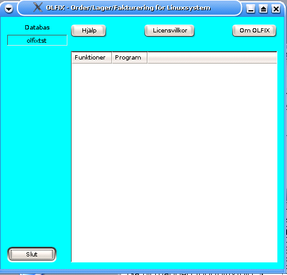
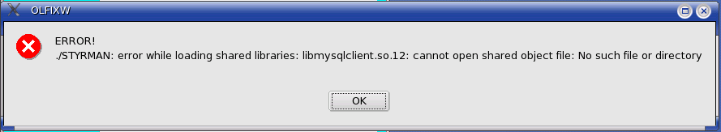
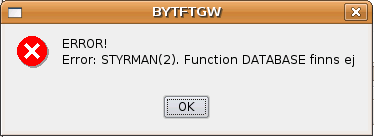

Order/Lager/Fakturering för Linuxsystem
Användarmanual
Kapitel Felsökning
Version 0.2
2007-03-08
This program is free software; you can
redistribute it and/or modify
it under the terms of the GNU
General Public License as published by
the Free Software
Foundation; either version 2 of the License, or
(at your option)
any later version.
Copyright 2006 Jan Pihlgren.
Tom huvudmeny
Connection error 1045
Connection error 2002.
Saknad funktion.

I fall OLFIX's huvudmeny är tom vid start kan man prova:
1. Starta OLFIXW från ett konsolfänster med kommando;
cd /opt/olfix/bin
./OLFIXW
eller
/opt/olfix/bin/OLFIXW
och följande bild kan uppenbara sig.

Orsak:
Binären för OLFIXW är skapad med en annan version av MySQL än den som är installerad på datorn.
Lösning:
Skapa en länk till nuvarande libmysqlclient.so.xx.
Om den nuvarande "libben" heter libmysqlclient.so.14 skapas länken med kommando:
ln -s libmysqlclient.so.14 libmysqlclient.so.12
Mer kan läsas i man ln
2. Det kan också bero på att databasen olfix eller olfixtst inte är skapade.
Se installationsanvisningarna.
3. En annan orsak kan vara att databasen inte är startad.
Se anvisningarna i MySQLs manual.


